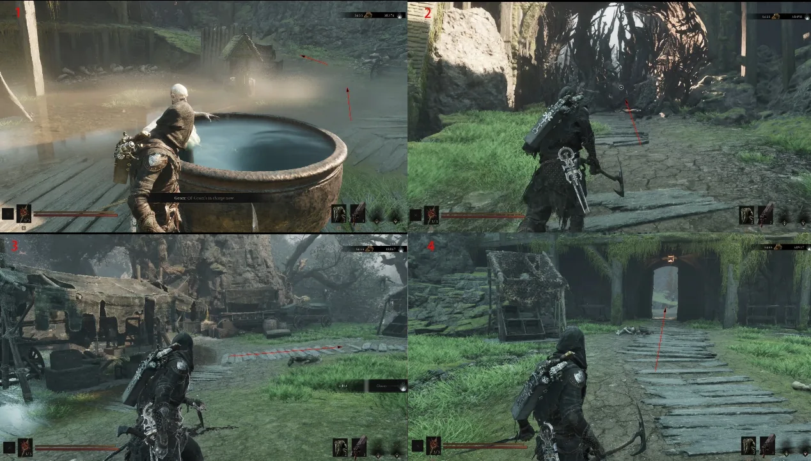
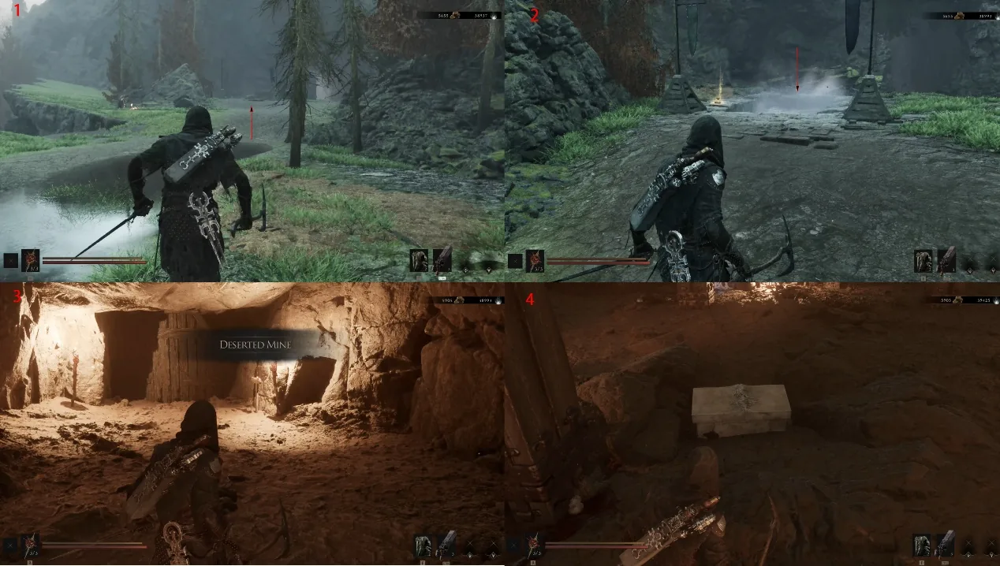
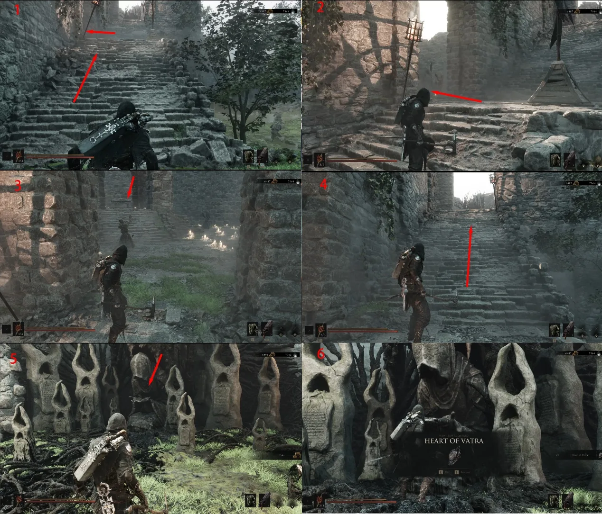
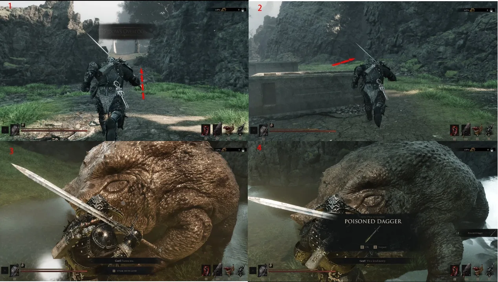

A route from Mushroom Village through the Deserted Mine to the One-Legged Wolf Tavern. It includes the Troubadour's Lute pickup and the later Temple of Vatra return.
Start
Mushroom Village
Checkpoint
One-Legged Wolf Beacon
Sidearm
Troubadour's Lute
Route 01After Mushroom Village, enter the rear courtyard and speak to Grom. This opens the annotated route out of the settlement.

Route 02Clear the enemies on the marked path, then leave through the exit indicated by the red arrows. Keep to the main route rather than the side trails.

Route 03Reach the Deserted Mine, clear the nearby enemies and collect Common Moonshine. Use it at the nearby well interaction to open the marked Treasure and take the 2,000 Tar shown in the route board.Route 04Follow the board from the mine to the One-Legged Wolf Beacon. Speak with Ruk and pick up the Map of Fainweald on the marked route.Route 05Return to the Beacon and continue to the One-Legged Wolf Tavern. Take the Troubadour's Lute from the marked stage pickup. The same stop also shows the Hand of Rock interaction and a Common Moonshine dialogue point.Route 06Go through the tavern exit and follow the route to the Temple of Vatra. The right-hand entrance leads to a Synaptic Vessel; the marked enemy route also leads to the Sheephead Totem.

Route 07Enter at the marked side route and complete the Make Offering interaction to open its Treasure. Continue on the indicated path for the Heart of Vatra.Route 08Use the Heart of Vatra at the revival point, then follow the four red-arrow panels back toward the One-Legged Wolf Tavern. The tavern interaction is labelled Inhabit Unknown Shell.

Route 09Finish the marked return exchange via Widow's Overlook and the Beacon. The final board records the Poisoned Dagger outcome; use the dialogue and arrow sequence shown rather than relying on an unverified shortcut.